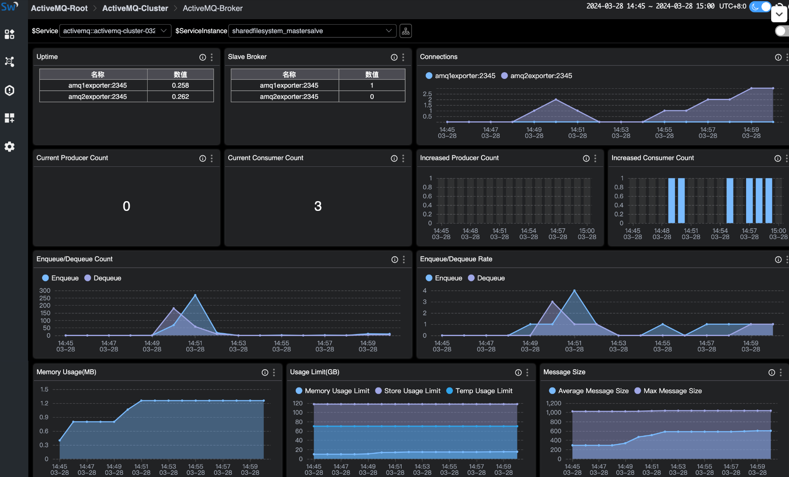
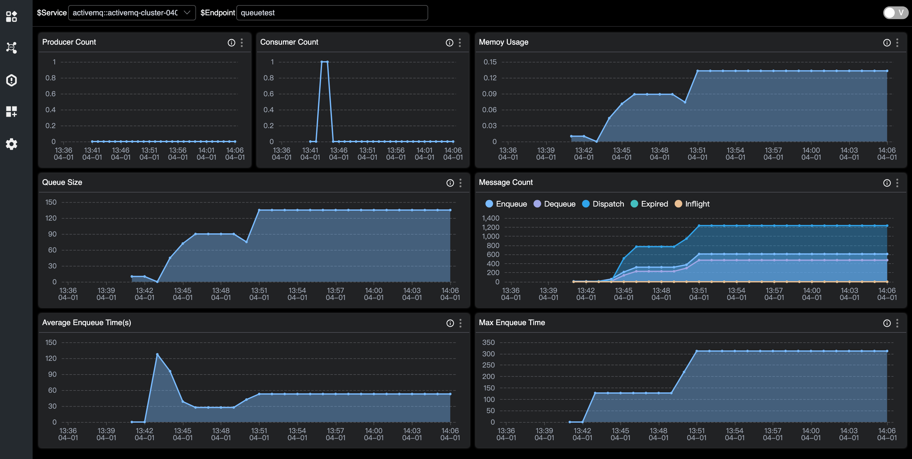

Monitoring ActiveMQ through SkyWalking
Introduction
Apache ActiveMQ Classic is a popular and powerful open-source messaging and integration pattern server. Founded in 2004, it has evolved into a mature and widely used open-source messaging middleware that complies with the Java Message Service (JMS).
Today, with its stability and wide range of feature support, it still has a certain number of users of small and medium-sized enterprises. It‘s high-performance version Apache Artemis is developing rapidly and is also attracting attention from users of ActiveMQ.
ActiveMQ has broad support for JMX (Java Management Extensions), allowing to be monitored through JMX MBean.
After enabling JMX, you can use JAVA’s built-in jconsole or VisualVM to view the metrics. In addition, some Collector components can also be used to convert JMX-style data into Prometheus-style data, which is suitable for more tools.
OpenTelemetry as an industry-recognized, standardized solution that provides consistent and interoperable telemetry data collection, transmission, and analysis capabilities for distributed systems, and is also used here for data collection and transmission.
Although it can directly accept JMX type data, the JMX indicators for collecting ActiveMQ are not in the standard library, and some versions are incompatible, so this article adopts two steps: convert JMX data into Prometheus-style indicator data, and then use OpenTelemetry to scrape HTTP endpoint data.
SkyWalking as a one-stop distributed system monitoring solution, it accepts metrics from ActiveMQ and provides a basic monitoring dashboard.
Deployment
Please set up the following services:
- SkyWalking OAP, v10.0+.
- ActiveMQ v6.0.X+.
- JMX Exporter v0.20.0. If using docker, refer bitnami/jmx-exporter.
- OpenTelmetry-Collector v0.92.0.
Preparation
The following describes how to deploy ActiveMQ with 2 single-node brokers and SkyWalking OAP with one single node. JMX Exporter runs in agent mode (recommended).
Configuration
- Enable JMX in ActiveMQ, the JMX remote port defaults to
1616, you can change it throughACTIVEMQ_SUNJMX_START. - Set up the exporter:
- [Recommended] If run exporter in
agent mode, need to append the startup parameter-DACTIVEMQ_OPTS=-javaagent:{activemqPath}/bin/jmx_prometheus_javaagent-0.20.0.jar=2345:{activemqPath}/conf/config.yamlin ActiveMQ env, then exporter server starts at the same time. - If run exporter in
single server, refer here to deploy the server alone. 2345is open HTTP port that can be customized. JMX’s metrics can be queried throughhttp://localhost:2345/metrics.
- [Recommended] If run exporter in
example of docker-compose.yml with agent exporter for ActiveMQ:
version: '3.8'
services:
amq1:
image: apache/activemq-classic:latest
container_name: amq1
hostname: amq1
volumes:
- ~/activemq1/conf/activemq.xml:/opt/apache-activemq/conf/activemq.xml
- ~/activemq1/bin/jmx_prometheus_javaagent-0.20.0.jar:/opt/apache-activemq/bin/jmx_prometheus_javaagent-0.20.0.jar
- ~/activemq1/conf/config.yaml:/opt/apache-activemq/conf/config.yaml
ports:
- "61616:61616"
- "8161:8161"
- "2345:2345"
environment:
ACTIVEMQ_OPTS: "-javaagent:/opt/apache-activemq/bin/jmx_prometheus_javaagent-0.20.0.jar=2345:/opt/apache-activemq/conf/config.yaml"
ACTIVEMQ_BROKER_NAME: broker-1
networks:
- amqtest
amq2:
image: apache/activemq-classic:latest
container_name: amq2
hostname: amq2
volumes:
- ~/activemq2/conf/activemq.xml:/opt/apache-activemq/conf/activemq.xml
- ~/activemq2/bin/jmx_prometheus_javaagent-0.20.0.jar:/opt/apache-activemq/bin/jmx_prometheus_javaagent-0.20.0.jar
- ~/activemq2/conf/config.yaml:/opt/apache-activemq/conf/config.yaml
ports:
- "61617:61616"
- "8162:8161"
- "2346:2346"
environment:
ACTIVEMQ_OPTS: "-javaagent:/opt/apache-activemq/bin/jmx_prometheus_javaagent-0.20.0.jar=2346:/opt/apache-activemq/conf/config.yaml"
ACTIVEMQ_BROKER_NAME: broker-2
networks:
- amqtest
otel-collector1:
image: otel/opentelemetry-collector:latest
container_name: otel-collector1
command: [ "--config=/etc/otel-collector-config.yaml" ]
volumes:
- ./otel-collector-config1.yaml:/etc/otel-collector-config.yaml
depends_on:
- amq1
networks:
- amqtest
otel-collector2:
image: otel/opentelemetry-collector:latest
container_name: otel-collector2
command: [ "--config=/etc/otel-collector-config.yaml" ]
volumes:
- ./otel-collector-config2.yaml:/etc/otel-collector-config.yaml
depends_on:
- amq2
networks:
- amqtest
networks:
amqtest:
example of otel-collector-config.yaml for OpenTelemetry:
receivers:
prometheus:
config:
scrape_configs:
- job_name: 'activemq-monitoring'
scrape_interval: 30s
static_configs:
- targets: ['amq1:2345']
labels:
cluster: activemq-broker1
processors:
batch:
exporters:
otlp:
endpoint: oap:11800
tls:
insecure: true
service:
pipelines:
metrics:
receivers:
- prometheus
processors:
- batch
exporters:
- otlp
example of config.yaml for ActiveMQ Exporter:
---
startDelaySeconds: 10
username: admin
password: activemq
ssl: false
lowercaseOutputName: false
lowercaseOutputLabelNames: false
includeObjectNames: ["org.apache.activemq:*","java.lang:type=OperatingSystem","java.lang:type=GarbageCollector,*","java.lang:type=Threading","java.lang:type=Runtime","java.lang:type=Memory","java.lang:name=*"]
excludeObjectNames: ["org.apache.activemq:type=ColumnFamily,*"]
autoExcludeObjectNameAttributes: true
excludeObjectNameAttributes:
"java.lang:type=OperatingSystem":
- "ObjectName"
"java.lang:type=Runtime":
- "ClassPath"
- "SystemProperties"
rules:
- pattern: ".*"
Steps
- Start
ActiveMQ, and the Exporter(agent) and the service start at the same time. - Start
SkyWalking OAPandSkyWalking UI. - Start
OpenTelmetry-Collector.
After completed, node metrics will be captured and pushed to SkyWalking.
Metrics
Monitoring metrics involve in Cluster Metrics, Broker Metrics, and Destination Metrics.
- Cluster Metrics: including memory usage, rates of write/read, and average/max duration of write.
- Broker Metrics: including node state, number of connections, number of producers/consumers, and rate of write/read under the broker. Depending on the cluster mode, one cluster may include one or more brokers.
- Destination Metrics: including number of producers/consumers, messages in different states, queues, and enqueue duration in a queue/topic.
Cluster Metrics

- System Load: range in [0, 100].
- Thread Count: the number of threads currently used by the JVM.
- Heap Memory: capacity of heap memory.
- GC: memory of ActiveMQ is managed by Java’s garbage collection (GC) process.
- Enqueue/Dequeue/Dispatch/Expired Rate: growth rate of messages in different states.
- Average/Max Enqueue Time: time taken to join the queue.
Broker Metrics

- Uptime: duration of the node.
- State: 1 = slave node, 0 = master node.
- Current Connentions: number of connections.
- Current Producer/Consumer Count: number of current producers/consumers.
- Increased Producer/Consumer Count: number of increased producers/consumers.
- Enqueue/Dequeue Count: number of enqueue and dequeue.
- Enqueue/Dequeue Rate: rate of enqueue and dequeue.
- Memory Percent Usage: amount of memory space used by undelivered messages.
- Store Percent Usage: space used by pending persistent messages.
- Temp Percent Usage: space used by non-persistent messages.
- Average/Max Message Size: number of messages.
- Queue Size: number of messages in the queue.
Destination Metrics

- Produser/Consumer Count: number of producers/Consumers.
- Queue Size: unacknowledged messages of the queue.
- Memory usage: usage of memory.
- Enqueue/Dequeue/Dispatch/Expired/Inflight Count: number of messages in different states.
- Average/Max Message Size: number of messages.
- Average/Max Enqueue Time: time taken to join the queue.